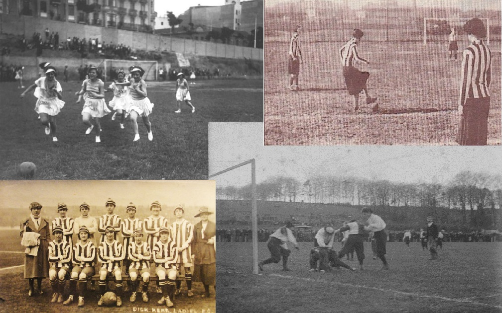

El valor no reconocido del fútbol femenino
Por Tomaida María Martínez Díaz
Se les suele llamar deportes minoritarios a aquellos que no tienen mucho seguimiento, ni mucha repercusión y que son practicados, quizás, por menos personas que los deportes de masas.
En cada país, según la tradición y la cultura hay un deporte llamado rey. Es portada en todos los diarios deportivos, a veces también en los de información general y ocupa casi el ochenta por ciento de la información deportiva emitida tanto por radio como por televisión.
En España ese deporte es el fútbol, causante de verdaderas pasiones que han llegado, en casos extremos, hasta actuaciones violentas. Tal es el poder de este deporte que un solo partido, un derby importante o un partido de la Selección, puede eclipsar cualquier acontecimiento de la realidad. Pero ¡ojo! fútbol masculino. Todos los niños han querido ser un Iniesta, un Xavi, un Di Estefano, un Torres, un Butragueño, un Zubizarreta, un Zidane, un Messi, un Guardiola, un Ronaldo o un Cruyff cualquiera. Sin embargo las niñas tenían que soñar ser otra cosa. Sobre todo porque no tenían un referente que seguir si el fútbol les gustaba.
Esto ha ido evolucionando, la sociedad actual es más abierta, ahora las niñas no solo pueden jugar al fútbol sino que pueden soñar ser futbolistas. De hecho, España tiene una Liga Femenina . Aunque nadie hable de ella, o al menos muy poca gente.
El fútbol femenino existe desde hace muchos siglos, no es algo nuevo, recién inventado. En China, en el siglo XII , las mujeres jugaban un juego parecido al fútbol denominado Tsu Chu. No ha sido la única práctica histórica de un juego parecido al balompié actual en el que las mujeres participaban. Por ejemplo en Francia se llegaron a redactar normas contra la violencia en este juego cuando lo practicaran las mujeres, en el año 1863. Pero el fútbol femenino moderno no existe, teóricamente, hasta 1892, fecha de registro del primer partido. ¿Dónde? En Glasglow, Escocia. Desde entonces y hasta hoy todo ha sido una carrera de obstáculos para que este deporte fuera reconocido.
 El primer club femenino lo crea Nettie Honeyball en 1894 y en la Primera Guerra Mundial, tras las múltiples pérdidas de hombres en combate, es el fútbol femenino el rey de las competiciones. Pero con el fin de la guerra, llegó también el fin del reconocimiento a estas ligas. Hasta 1971 la UEFA no promueve el reconocimiento y la creación de ligas femeninas entre sus asociados.
Y aquí, en España, la Liga Nacional Femenina (que ha recibido diferentes nombres a lo largo de su historia) no fue creada por la Real Federación Española de Fútbol hasta la temporada 1988/89. A esta competición hay que añadir la Copa de la Reina, oficialmente conocida como Campeonato de España de Fútbol Femenino – Copa de Su Majestad la Reina (oficial desde 1983). Su antecedente directo es la Copa Reina Sofía, de la que se disputaron dos ediciones (1981 y 1982).
En la temporada 2011/12 la Federación, en total, registró 697.871 fichas de jugadoras femeninas, por lo que solo un 4% de los registros es del fútbol femenino. Podría parecer un dato totalmente pesimista y que daría la razón a aquellos que dicen que no tiene repercusión social. Pero en los siguientes gráficos podrán observar que el crecimiento de este deporte ha sido mucho mayor que el del apartado masculino.
Hay que aclarar que el número de licencias total del masculino es considerando el estatus de profesional, porque el total de licencias del fútbol masculino en España, independientemente de la profesionalidad otorgada, siempre es mayor. Dado que en el femenino solo existen dos categorías hasta la temporada 2009/2010, a partir de la cual hay una división entre el profesional y el aficionado y además se aumentan las categorías reconocidas. En un principio era: femenino “f” y femenino base. En la temporada 2010/2011 pasan a ser: profesional femenino, aficionado femenino, juvenil, cadete, infantil, alevín y benjamín (tal como ocurre con el masculino).
Y la pregunta es por qué no tiene éxito entonces el fútbol femenino. Qué puede haber tan diferente en esta versión que hace del mismo juego algo casi invisible. Y si es así, de quién es la culpa: de los protagonistas, las Instituciones, los medios, la gente, el gobierno, la crisis, ...
Existe un dicho muy sabio que dice “que no se puede hablar de aquello que no se conoce” y seguramente ese ha sido el gran error en cuanto al fútbol femenino. Hemos opinado sin haberlo visto, sin vivirlo, sin saber cómo es. Llegando a crear una serie de tópicos como que no es emocionante, que no es competitivo y que las mujeres que lo practican son, por definición, machorras y seguramente lesbianas. Cuestiones que la realidad se encarga de desmontar
Por lo cual debemos conocer los distintos puntos de vista que puedan explicar esta situación. Y la mejor manera de empezar es acudir a los protagonistas de esta Liga.
Nos hace falta también una visión institucional de toda esta situación. En España la Real Federación Española de Fútbol es la máxima organización responsable de la promoción, defensa y organización del fútbol, independientemente del género, la edad y las distintas situaciones.
Hay que girar la vista, en este momento, a aquellos medios que tradicionalmente sí han hablado y hablan del deporte rey español; pero no tanto de su versión femenina. Internet es una gran posibilidad de expansión y difusión de este deporte, pero por qué no hacerle un hueco en los llamados medios tradicionales (prensa, radio y televisión).
Al fijarnos en la prensa, es más comprensible acudir a un diario deportivo. Al fin y al cabo no hay nada más específico en lo que pueda tener cabida el fútbol femenino. Desde hace unos años, estos diarios, han intentado acercarse más a los deportes practicados por mujeres, sobre todo al fútbol.
La radio sería el espacio más adecuado, quien sepa de fútbol sabe que la radio es su medio. Incluso hoy en día, con tanta tecnología a nuestro alcance, en los estadios se siguen viendo aficionados con la oreja pegada a una radio de bolsillo. El transistor ha sido el mejor mensajero de este deporte.
Y por último la televisión, el que más visibilidad puede aportar al fútbol femenino. Llega a todos los hogares y lo que se ve en la tele se comenta en todas partes. Las audiencias se disparan cuando se puede ver fútbol en la pequeña pantalla.
Son muchos puntos de vista, pero todos coinciden en algo y es que no hay una conclusión de por qué no cuaja o no tiene éxito. La culpa es divisible, la sociedad, los medios, las Instituciones y hasta los propios protagonistas reconocen que aún están en crecimiento y que todavía no han terminado de explotar. Y quizás esa sea la clave, darle un poquito más de tiempo para que pueda madurar. Sin embargo no debiéramos olvidar que a un niño hay que ayudarle a andar cuando da sus primeros pasos, aunque solo sea con una mano en la que se pueda apoyar para sentirse algo más seguro. Un pequeño empujón, algo más de apoyo, nunca vendrá mal a un deporte que merece la pena. Que no tiene nada que envidiar a su versión masculina y que guarda grandes talentos.
Cuántos motivos para reconocerle su gran valor.
- Jugadoras, cuerpo técnico y departamento de prensa del Atlético Féminas.
- Jugadoras, cuerpo técnico y departamento de prensa del Sevilla Femenino.
- Jugadoras, cuerpo técnico y departamento de prensa del Barcelona Femenino.
- Al Rayo Vallecano Femenino.
- A los seleccionadores nacionales: Ignacio Quereda, Ángel Vilda y Jorge Vilda.
- A David Menayo
- A Paco Gonzalez y su equipo.
- A María Escario.
- También a Patricia Merchán, Virginia García, Felix Trigueros, Alba Rocher y Arturo Martínez.